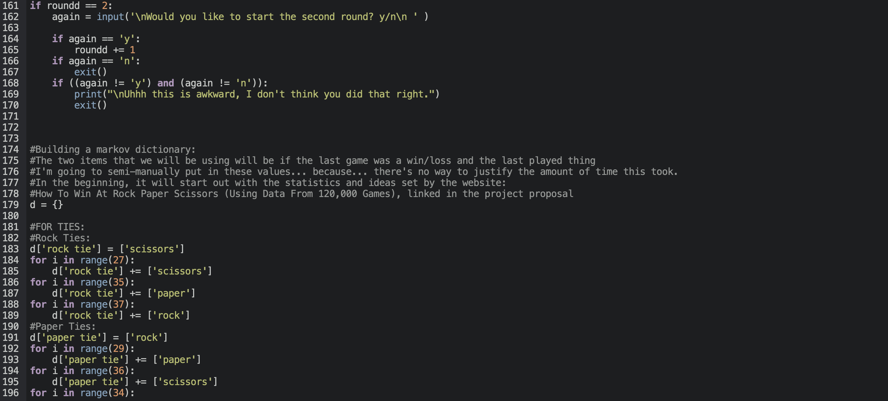
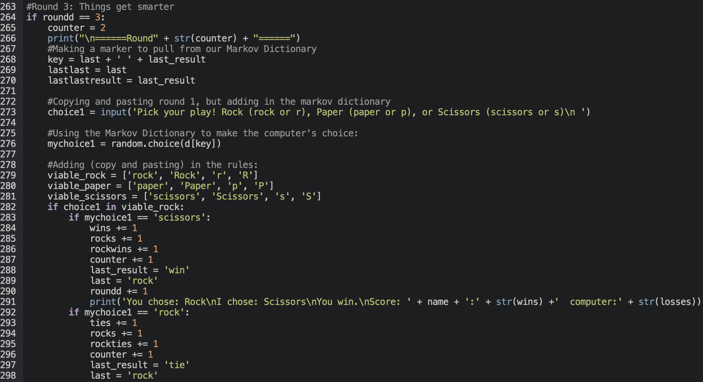
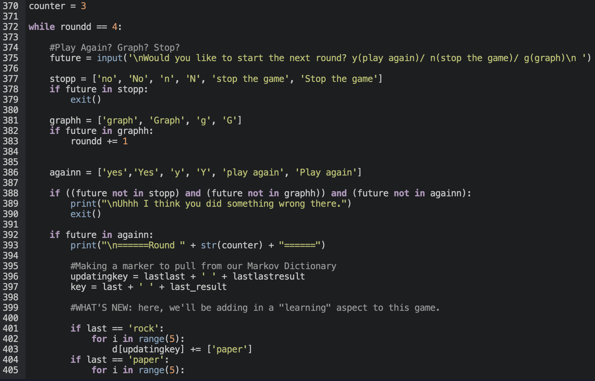
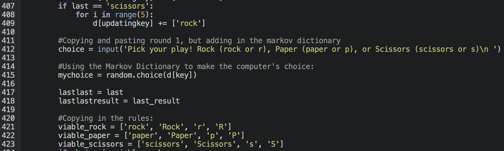
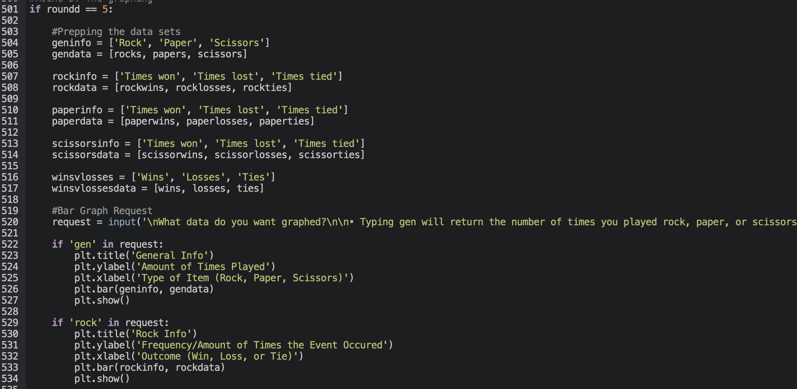

As mentioned before, the project aims to simply play a game of rock paper scissors with the user. To do this, the program takes a series of inputs and commands from the user that allows them to advance on to the next round, play a given item, end the game, and even graph their plays and choices. The reason why this program is "slightly smarter" is because, rather than sticking to these inputs of data and information, it also adds on the data from the rounds that it plays against you. Given the outcome and last played item from the last round, the computer saves the opposite of your next input into the Markov Dictionary so that it can use the random.choice() command after evaluating the last thing that the user played and the last outcome.
To graph these results, the program uses the module matplotlib's pyplot in order to create a bar graph using various strings and data values that have been accumulated as the rounds go on. These are based on the player's input, of course, and are added as the player chooses Rock, Paper, or Scissors. All of these elements, I feel, somewhat effectively incorporate some of the most fun aspects of semester 2's computer science projects, with a fun game aspect to it that makes it interactive and enjoyable to the user, either intriguing them through the idea of a game, the probabilities used to make this program, or the coding itself.
Now! For the interesting part of this (this claim may be disputed)— the code! The following images will be shared with some captions or side text describing some of its uses. The code itself is broken down into "rounds" that separate each function and it's individual part in creating the program. There are comments already on the program itself, so the captions will just be larger and easier to read as the photos are sized down.
To the left is Round 0: The Setup. In this, the program creates most of the variables that it will be using to count these "rounds", some of the data necessary to graph, and above (not visible) is the importing of the modules random and matplotlib.pyplot as plt. At the end of this round, we create the introduction, which asks for your name and if you want to begin the next round.
To the right is Round 1: The First Move. In this, the rules of the game are described, and the first action is called— the player has to choose rock, paper, or scissors, which can be various inputs as long as they fall within the "viable" data that is described by the list. Upon receiving this "viable" data, the program is able to classify whether it's random chosen value from a list of probabilities will succeed or fail against the player. The results of this are all printed to a string, and reported to the player. Behind the scenes, this "rules" system also marks down the last thing the player played, the outcome, and other things later used for the graph. Although all of this round isn't included, the rest of it is simply just inputting values and the various values— which can be viewed on the program. It's just too lengthy to take a screenshot of.
To the left is Round 2: Play Again? This space is used to ask if the player would like to continue or stop, and it's also used to build the Markov Dictionary. Of course, the Markov Dictionary takes 9 different key inputs, dependent on the item played and the last outcome. Although no data can be used, the Markov Dictionary can begin to become of use in the next rounds.
To the right is Round 3: Things get Smarter. This round is used to prep the program to be able to loop the program indefinitely. As we do not yet have all of the values needed to add to the Markov Dictionary, round 3 incorporates the Markov Dictionary and also begins to record keys, and archives information from two rounds ago as "lastlast" and "lastlast result" for use in the next round. Besides this, the rules are again copy-and-pasted from round 1 to run this round.
 Above is Round 4: The Loop. This round is where the game can last indefinitely— the player can continue to play the game as long as their inputs are right, and the program effectively manages to add information to the Markov Dictionary and pull information from it without too much of a hassle. Every time a new round starts, the player is prompted with an input to either continue playing, stop the program, or graph their results. The request based on this input will be accepted, and will either continue, stop, or advance this game. This is also where the big part of some form of Machine Learning takes place. By adding on information and trying to "teach" this program any patterns in the player's outputs, the program is technically learning on its own.
To the left is Round 5: The Graphing. Although this isn't the full screenshot, I'm sure that the message is conveyed— this sums up all of the information that we had left open in round 0 and added to throughout the game. This again uses an input to request different graphs and information in the form of bar graphs created by Pyplot. After all of the graphing is done, this leads to Round 6: The End which won't have it's own part because it just closes the program.